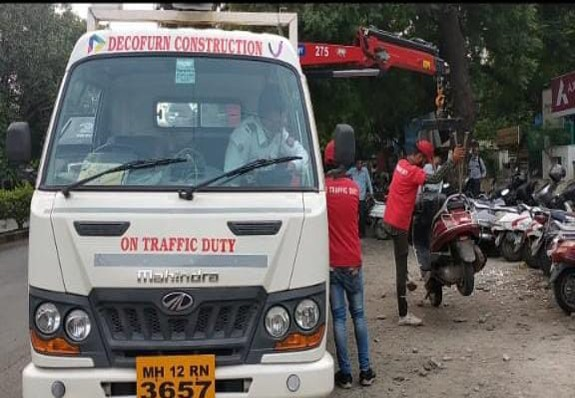

Traffic
Traffic
Intelligent Traffic Management (IITMS)
Urban traffic congestion and inefficient signal control can lead to increased travel times and safety risks. Our advanced intelligent traffic systems resolve this through real-time monitoring and centralized signal automation.
Project Impact
- Real-time signal automation
- Centralized traffic control
- Reduced city-wide congestion
- Improved road safety
 Infrastructure
Infrastructure
Smart City ICT Infrastructure
Lack of integrated digital infrastructure prevents efficient urban management. We deploy end-to-end ICT solutions to empower smart city operations and centralized data-driven governance.
Project Impact
- Integrated city-wide systems
- Data-driven urban management
- Scalable digital network
- Transparent governance
 Surveillance
Surveillance
Safe City CCTV Surveillance
Mitigate growing public safety concerns with comprehensive city-wide monitoring. Our IP-based CCTV networks feature centralized command centers and AI-powered management.
Project Impact
- Real-time video monitoring
- Increased public security
- High-resolution imaging
- Accelerated incident response
 Telecom
Telecom
Metro Rail ICT Solutions
Deliver reliable communication and data networks within complex metro rail environments. We build robust telecom and ICT infrastructures tailored for transportation networks.
Project Impact
- Station communication systems
- Resilient network backbone
- Reliable transport operations
- Enhanced passenger safety
 Surveying
Surveying
3D & 4D Urban Mapping
Replace outdated urban data that leads to inefficient planning. Our cutting-edge 3D and 4D mapping solutions offer exceptional accuracy for direct visualization and land development.
Project Impact
- Accurate 3D visualization
- Optimized land development
- Advanced urban planning tools
- Efficient infrastructure growth
 Security
Security
Digital Building Assessment
Replace manual safety audits of large buildings with digital solutions. We use advanced sensor deployments for continuous monitoring of structural integrity.
Project Impact
- Enhanced building safety
- Automated safety audits
- Structural health monitoring
- Regulatory compliance

OperationsTraffic Towing Services
Road obstructions and illegal parking cause severe traffic disruptions. We provide professional traffic towing and parking management in direct collaboration with local law enforcement.
Project Impact
- Rapid obstruction removal
- Enforced parking discipline
- Reduced congestion
- Improved emergency access